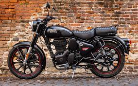

|
|
After the Indian Independence Act 1947 the new government looked for a suitable motorcycle for its army to
patrol the country's border. In 1952 the Royal Enfield Bullet was chosen as the most suitable bike for the job.
In 1954, the government ordered 800 in units of the 350 cc model. In 1955, the Redditch company partnered with
Madras Motors in India to form 'Enfield India' to assemble, under licence, the 350 cc Royal Enfield Bullet
motorcycle in Madras (now called Chennai). The tooling was sold to Enfield India so that they could
manufacture components.[7] By 1962, all components were made in India. The Indian Enfield uses the 1960
engine (with metric bearing sizes), Royal Enfield still makes an essentially similar bike in the 350 cc
and 500 cc models, along with several different models for different market segments.[8] |
| The Royal Enfield Interceptor 650 is a parallel twin retro-styled motorcycle introduced by Royal Enfield
in 2018. It is the first modern twin cylinder motorcycle developed by the company. In 2017, the company
revealed a new motorcycle which revived the classic Royal Enfield 1960s name, "Interceptor" |
 |